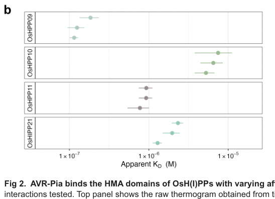

AVR-Pia is a small (85 aa) secreted effector of the rice blast fungus Pyricularia (Magnaporthe) oryzae. After an N-terminal signal peptide, the mature protein folds into a six-stranded beta-sandwich stabilised by a single disulfide bond, placing it in the sequence-diverse but structurally conserved MAX (Magnaporthe Avrs and ToxB-like) effector family. The gene is expressed only during infection, from the onset of appressorium differentiation; the protein accumulates in the biotrophic interfacial complex and is translocated into the cytoplasm of invaded rice cells. Inside the host cell AVR-Pia binds heavy metal-associated (HMA) domains. In rice carrying the Pia locus it binds the integrated HMA (RATX1) decoy domain of the sensor NLR RGA5 (apparent Kd about 8 uM), relieving RGA5-mediated repression of the executor NLR RGA4 and triggering a hypersensitive cell death and race-specific resistance; the naturally occurring F24S/T46N allele (AVR-Pia-H3) no longer binds the HMA domain and escapes recognition. AVR-Pia also binds, with higher affinity, the HMA domains of the rice HMA plant proteins OsHPP09, OsHPP10, OsHPP11 and the isoprenylated HMA protein OsHIPP21, which are candidate virulence targets. AVR-Pia contributes to virulence, but how binding these host HMA proteins promotes susceptibility is unknown. The gene shows presence/absence polymorphism among field isolates.
| GO Term | Evidence | Action | Reason |
|---|---|---|---|
|
GO:0140404
effector-mediated perturbation of host innate immune response by symbiont
|
EXP
PMID:23548743 The rice resistance protein pair RGA4/RGA5 recognizes the Ma... |
MODIFY |
Summary: Cesari et al. (2013; abstract only in the cache) showed that the rice NLR pair RGA4/RGA5 recognises AVR-Pia by direct binding of the effector to RGA5-A, that a non-binding AVR-Pia allele is not recognised, and that this recognition confers resistance. The annotation records that AVR-Pia modulates (here, activates) rice innate immunity.
Reason: The broad term (modulation, either activation or suppression, of host innate immunity) is correct for an avirulence effector whose recognition activates RGA4/RGA5-dependent resistance, and it is backed by experiments on AVR-Pia itself (binding of wild-type but not the inactive allele to RGA5-A). The full text is not cached, so the assay is not second-guessed; only the term is refined. The immune output of AVR-Pia recognition by RGA4/RGA5 is a hypersensitive cell death (shown directly in PMID:25024433 and PMID:28087830), so the informative term is GO:0080185, a descendant of GO:0140404. "Perturbation" is easily read as an immunosuppressive virulence activity, which has not been shown for AVR-Pia.
Proposed replacements:
effector-mediated activation of plant hypersensitive response by symbiont
Supporting Evidence:
PMID:23548743
RGA4 and RGA5 also mediate recognition of the unrelated M. oryzae effector AVR-Pia
PMID:23548743
Direct binding seems to be required for resistance as an inactive AVR-Pia allele did not bind RGA5-A.
PMID:25024433
Upon recognition of the pathogen effector AVR-Pia by direct binding to RGA5, repression is relieved and cell death occurs.
file:PYROR/AVR-Pia/AVR-Pia-deep-research-falcon.md
This is a **host defence pathway activated by detection of AVR-Pia**
|
|
GO:0140404
effector-mediated perturbation of host innate immune response by symbiont
|
EXP
PMID:28087830 Recognition of the Magnaporthe oryzae Effector AVR-Pia by th... |
MODIFY |
Summary: Ortiz et al. (2017) mapped the AVR-Pia surface that binds the RGA5 RATX1/HMA domain (ITC, NMR titration, Y2H, co-IP) and tested structure-informed AVR-Pia mutants in transgenic M. oryzae on Pia rice. Isolates expressing wild-type or binding-competent AVR-Pia were avirulent and gave HR lesions on Kitaake (Pia), whereas the non-binding F24S mutant was fully virulent; untagged binding-competent mutants also induced RGA4/RGA5-dependent cell death in N. benthamiana.
Reason: The experiments show that AVR-Pia, through binding the RGA5 HMA domain, activates an R-gene-dependent hypersensitive response and resistance in the host. This is exactly the scope of GO:0080185 (effector-mediated activation of plant hypersensitive response by symbiont), a descendant of GO:0140404 whose definition includes direct recognition of the effector by an R protein. The refinement drops the ambiguity of "perturbation" (activation or suppression), since no suppression of host immunity by AVR-Pia has been shown, and matches the treatment of the Cladosporium avirulence effector AVR9 (genes/FULFL/AVR9). AVR-Pia does part of the work of the process: it is the ligand whose binding to the RGA5 decoy domain releases RGA4.
Proposed replacements:
effector-mediated activation of plant hypersensitive response by symbiont
Supporting Evidence:
PMID:28087830
were completely avirulent and produced either no symptoms or small HR lesions characteristic of resistance
PMID:28087830
Isolates expressing AVR-Pia F24S were highly virulent on Kitaake and produced large numbers of disease lesions
PMID:28087830
binding to the RATX1 domain is necessary for pathogen recognition but can be of moderate affinity
PMID:28087830
AVR-Pia mutants with wild-type binding to RGA5 RATX1 induced cell death, indicating that they are recognized by RGA5/RGA4
|
|
GO:0140404
effector-mediated perturbation of host innate immune response by symbiont
|
IDA
PMID:25024433 The NB-LRR proteins RGA4 and RGA5 interact functionally and ... |
MODIFY |
Summary: Cesari et al. (2014) showed that co-expression of AVR-Pia with RGA4 and RGA5 triggers rapid, strong cell death in N. benthamiana and HR-like cell death (luciferase-reporter loss) in rice protoplasts, whereas the non-binding AVR-Pia-H3 allele does not. AVR-Pia binding to RGA5 relieves RGA5 repression of the autoactive cell-death executor RGA4.
Reason: The direct assay is AVR-Pia-triggered, R-gene-dependent HR-like cell death, which is precisely GO:0080185. The general "perturbation" parent is correct but uninformative and does not distinguish activation from suppression of immunity. The executor of cell death is RGA4, and AVR-Pia's contribution is the recognised ligand step (binding RGA5 to de-repress RGA4), which is what GO:0080185 describes on the symbiont side.
Proposed replacements:
effector-mediated activation of plant hypersensitive response by symbiont
Supporting Evidence:
PMID:25024433
Co-expression of AVR-Pia, RGA4, and RGA5 induced rapid and strong cell death indistinguishable in timing and appearance from the response induced by RGA4 alone
PMID:25024433
Upon recognition of the pathogen effector AVR-Pia by direct binding to RGA5, repression is relieved and cell death occurs.
PMID:25024433
The lack of activity of AVR-Pia_H3 indicates that binding of AVR-Pia to RGA5 is crucial to relieve RGA5 repressor activity.
|
|
GO:0030430
host cell cytoplasm
|
IDA
PMID:27528510 Fluorescent reporter analysis revealed the timing and locali... |
NEW |
Summary: Live-cell imaging of fluorescently labelled AVR-Pia during rice infection showed accumulation in biotrophic interfacial complexes together with the cytoplasmic effector PWL2, followed by delivery into the host cytoplasm.
Reason: Host cell cytoplasm is where AVR-Pia meets both its recognising receptor RGA5 (a cytosolic NLR) and its candidate HMA-protein targets, and recognition inside rice cells is independently supported by the faster Pia-dependent cell death when the protein is expressed without its signal peptide in rice. No location annotation exists for AVR-Pia in GOA. This is a cellular component term and does not raise the process-participation concerns that apply to NEW process terms.
Supporting Evidence:
PMID:27528510
AVR-Pia accumulates in biotrophic interfacial complexes before being delivered to the plant cytosol
PMID:19454732
supporting the idea that pex22 is recognized by Pia inside rice cells
|
Q: Does binding of AVR-Pia to OsHPP09, OsHPP10, OsHPP11 or OsHIPP21 alter the stability, localisation or metal-binding activity of these HMA proteins, and is that the mechanism by which AVR-Pia promotes virulence?
Q: Should a symbiont-side molecular function term exist for an effector's ligand role towards a host immune receptor (here, AVR-Pia binding the RGA5 integrated decoy domain)? Signaling receptor binding (GO:0005102) was considered and not asserted: it is defined for hormone/neurotransmitter-type receptors, and no fungal or oomycete gene product carries it with experimental evidence in GOA, so effector-NLR binding is currently captured only by the effector-side process term.
Experiment: Generate AVR-Pia deletion strains in a Pia-negative background and compare virulence on wild-type rice versus OsHPP09 E16 (non-binding) knock-in or OsH(I)PP knockout lines, to test whether the HMA-protein interactions account for AVR-Pia's virulence contribution.
Type: genetic interaction / infection assay
Experiment: Determine the co-crystal structure of AVR-Pia with the RGA5 HMA domain and compare it with the AVR-Pia/OsHPP09-HMA complex to explain the ~70-fold affinity difference and guide engineering of RGA5 for stronger recognition.
Type: structural biology
The research report should be a detailed narrative explaining the function, biological processes, and localization of the gene product. Citations should be given for all claims.
You should prioritize authoritative reviews and primary scientific literature when conducting research. You can supplement
this with annotations you find in gene/protein databases, but these can be outdated or inaccurate.
We are specifically interested in the primary function of the gene - for enzymes, what reaction is catalyzed, and what is the substrate specificity? For transporters, what is the substrate? For structural proteins or adapters, what is the broader structural role? For signaling molecules, what is the role in the pathway.
We are interested in where in or outside the cell the gene product carries out its function.
We are also interested in the signaling or biochemical pathways in which the gene functions. We are less interested in broad pleiotropic effects, except where these elucidate the precise role.
Include evidence where possible. We are interested in both experimental evidence as well as inference from structure, evolution, or bioinformatic analysis. Precise studies should be prioritized over high-throughput, where available.
AVR-Pia is a secreted effector of the rice blast fungus Pyricularia oryzae, also called Magnaporthe oryzae—not the rice Pia resistance gene or the distinct fungal effector AVR-Pik. The supplied UniProt record identifies B9WZW9 as AVR-Pia and cites EMBL BAH23994.1; the papers retrieved independently establish the identity and function of the fungal protein named AVR-Pia, although they do not independently cross-reference that accession to their experimental sequence. The original cloning study identified the fungal locus as pex22 and showed that introducing it into an AVR-Pia-negative isolate restored avirulence specifically on Pia-bearing rice. (sornkom2017fluorescentreporteranalysis pages 1-2, yoshida2009associationgeneticsreveals pages 4-6)
AVR-Pia’s best-established molecular activity is binding rice proteins through heavy metal-associated (HMA) domains. Binding the HMA domain integrated into the rice immune receptor RGA5 makes the fungus detectable and triggers resistance when the partner receptor RGA4 is present. More recent work identified four other rice HMA-domain proteins that bind AVR-Pia, making host-protein engagement a plausible route to its infection-promoting activity. No catalytic reaction, transported substrate, or specific host biochemical pathway altered by AVR-Pia has been demonstrated; it should be annotated as an intracellularly acting protein-binding effector, not as an enzyme, transporter, or fungal HMA protein. The HMA domain belongs to its rice binding partners, not to AVR-Pia. (ortiz2017recognitionofthe pages 1-2, maidment2026twofoldsmany pages 6-9, maidment2026twofoldsmany pages 18-20)
The encoded protein is 85 amino acids long, including a predicted 19-residue N-terminal secretion signal; the original sequence analysis identified no conventional functional domain. Subsequent experimental NMR structure determination placed the mature protein in the MAX (Magnaporthe avirulence and ToxB-like) structural family: its core comprises two antiparallel three-stranded β-sheets forming a β-sandwich, stabilized by a disulfide bond. MAX membership resolves the apparent absence of a recognizable sequence-based family annotation: proteins in this family can share a fold despite little sequence similarity. Structural homology does not imply that AVR-Pia and other MAX effectors have identical host targets. (yoshida2009associationgeneticsreveals pages 4-6, wei2023recentadvancesin pages 5-7, guillen2015structureanalysisuncovers pages 10-13, maidment2026twofoldsmany pages 2-4)
In the original association study, presence of pex22 across 22 fungal isolates perfectly tracked the AVR-Pia phenotype (P = 3.8 × 10⁻⁵); complementation restored resistance-inducing activity on Pia-positive Sasanishiki but not on Pia-negative Shin-2. Expression of pex22 inside Pia-positive rice cells induced cell death, including when its secretion signal was removed. These experiments establish its avirulence-determinant function and intracellular recognizability, not a defined enzymatic activity or proof that each host interactor promotes susceptibility. The gene also shows presence/absence variation among isolates. A 2026 study estimates that AVR-Pia occurs in approximately 20% of rice-infecting isolates; that estimate should not be interpreted as a universal frequency across locations or seasons. (yoshida2009associationgeneticsreveals pages 4-6, yoshida2009associationgeneticsreveals pages 9-11, yoshida2009associationgeneticsreveals pages 6-9, maidment2026twofoldsmany pages 2-4)
AVR-Pia is made by the fungus during infection. Reporter experiments detected induction during appressorial differentiation, before penetration; expression was visible even in a penetration-deficient fungal mutant. A functional fluorescent AVR-Pia fusion accumulated at the biotrophic interfacial complex (BIC) beside invasive hyphae, colocalized with the BIC effector PWL2, and was detected in the rice-cell cytoplasm after delivery. Reporter measurements detected induction at approximately 18 hours post-inoculation and BIC-associated fusion protein at approximately 27–30 hours. Deleting the signal-peptide coding region altered the secretion-associated localization pattern. Thus, the best-supported route is fungal production → secretion to the infection interface/BIC → delivery into the host cell, with the key characterized binding and recognition events occurring intracellularly. (sornkom2017fluorescentreporteranalysis pages 2-3, sornkom2017fluorescentreporteranalysis pages 3-6)
Some experimental AVR-Pia and receptor fusions also showed nuclear as well as cytoplasmic fluorescence in transient-expression assays. This does not establish a specifically nuclear virulence function; infection imaging and intracellular receptor recognition support a host-cytoplasmic action, while the exact subcellular sites and physiological consequences of binding the newly identified rice proteins remain unresolved. (cesari2013thericeresistance pages 7-9, sornkom2017fluorescentreporteranalysis pages 3-6, maidment2026twofoldsmany pages 18-20)
In rice carrying the Pia locus, RGA5 is the sensor nucleotide-binding leucine-rich repeat receptor and RGA4 is its cell-death/defence-signalling partner. The resistance-competent RGA5-A isoform binds AVR-Pia directly; RGA4 is required for effective resistance but was not the direct AVR-Pia-binding partner in the reported interaction assays. RGA5 restrains RGA4-associated cell death in the absence of a recognized effector. Recognition through RGA5’s C-terminal integrated RATX1/HMA domain enables RGA4-dependent effector-triggered immunity and a localized hypersensitive cell-death response. This is a host defence pathway activated by detection of AVR-Pia, not a demonstrated immune-signalling activity intrinsically catalysed by the fungal protein. (cesari2013thericeresistance pages 1-2, cesari2013thericeresistance pages 7-9, liu2024therolesof pages 7-9, ortiz2017recognitionofthe pages 1-2)
Biophysical analysis measured an apparent dissociation constant of 7.8 µM for purified AVR-Pia binding the RGA5 integrated HMA domain. Structure-guided substitutions at AVR-Pia’s exposed binding surface impaired HMA engagement; notably, F24S rendered the effector fully virulent on Pia rice in infection assays, whereas some substitutions that weakened binding remained recognizable. AVR-Pia also associates with RGA5 regions outside the HMA domain, but those contacts alone did not substitute for HMA-dependent recognition. The naturally occurring AVR-Pia-H3 variant carries F24S and T46N and evades normal RGA5-mediated detection without a major change to its MAX fold. These results make binding to RGA5-HMA a mechanistically supported determinant of race-specific resistance, while leaving details of the receptor pair’s activation transition incompletely resolved. (ortiz2017recognitionofthe pages 4-5, ortiz2017recognitionofthe pages 7-9, ortiz2017recognitionofthe pages 2-4, maidment2026twofoldsmany pages 6-9)
A peer-reviewed study published 13 July 2026—newer than the requested 2023–2024 priority window—validated binding of AVR-Pia to OsHPP09, OsHPP10, OsHPP11 and OsHIPP21. It used complementary protein-interaction assays in vitro and in plant tissue, measured binding of purified HMA domains by isothermal titration calorimetry (ITC), and solved the AVR-Pia–OsHPP09-HMA crystal structure. These are experimentally supported interactors or candidate virulence targets, not four proven susceptibility genes for AVR-Pia. Preliminary screens produced additional candidate hits; the four listed here are the interactors carried forward into the reported biochemical characterization. (maidment2026twofoldsmany pages 1-2, maidment2026twofoldsmany pages 2-4, maidment2026twofoldsmany pages 6-9)
The affinity comparison below concerns isolated HMA domains, not full-length proteins inside infected rice. The cited study’s Figure 2 reports three independent ITC experiments for each newly measured interaction. (maidment2026twofoldsmany pages 6-9, maidment2026twofoldsmany media e322509a)
| Rice protein HMA domain | Biological class | AVR-Pia apparent KD (in vitro ITC) | Significance |
|---|---|---|---|
| OsHPP09-HMA | HPP | 115 nM | Strongest validated interaction; approximately 68-fold tighter than RGA5-HMA |
| OsHPP11-HMA | HPP | 772 nM | High-affinity, submicromolar interaction |
| OsHIPP21-HMA | HIPP | 1.29 µM | Intermediate-affinity interaction |
| OsHPP10-HMA | HPP | 5.26 µM | Weakest of the four validated host-protein interactions |
| RGA5-HMA integrated domain | NLR-integrated HMA | 7.8 µM | Immune-receptor reference value from a separate, older assay reported in 2017 |
Table: Apparent domain-level affinities measured with purified HMA domains; these values do not establish full-length binding or efficacy in plant cells. Host-target values are from peer-reviewed Maidment et al. (2026), Figure 2 and text, while RGA5-HMA is the separately reported 2017 reference (maidment2026twofoldsmany pages 6-9, maidment2026twofoldsmany pages 17-18, maidment2026twofoldsmany media e322509a, ortiz2017recognitionofthe pages 4-5).
In the OsHPP09 complex, AVR-Pia forms an antiparallel β-sheet interface with the rice HMA domain, supplemented by hydrogen bonds and salt bridges. Replacing OsHPP09 E16 disrupted AVR-Pia binding without grossly disrupting the HMA fold, providing a potential target for future structure-guided host modification. The naturally occurring AVR-Pia-H3 substitutions also disrupted detectable stable binding to the newly characterized HMA proteins. Despite sharing the MAX fold, AVR-Pik and PWL2 preferentially engage different HMA-protein subsets; their experimentally demonstrated effects on their own targets must not be assigned to AVR-Pia. (maidment2026twofoldsmany pages 12-14, maidment2026twofoldsmany pages 14-17, maidment2026twofoldsmany pages 6-9, maidment2026twofoldsmany pages 17-18)
Interpretive limit: Binding is firmly demonstrated, and the 2026 authors describe AVR-Pia as contributing to rice virulence. Their host-interactor experiments do not establish which of these four interactions changes rice susceptibility, what host process is manipulated, whether the interactions occur at a particular host organelle during natural infection, or whether modifying OsHPP09 E16 protects a crop in the field. The authors explicitly identify functional outcomes and possible redundancy among HMA-targeting effectors as open questions. (maidment2026twofoldsmany pages 2-4, maidment2026twofoldsmany pages 17-18, maidment2026twofoldsmany pages 18-20)
AVR-Pia presence and functional allele status can inform Pia-dependent isolate phenotyping and resistance-gene matching, but its isolate-level presence/absence and immune-evasive variants limit reliance on Pia alone. The receptor–effector structures provide a testbed for engineering rice immune recognition: a 2022 RGA5-HMA design gained new effector recognition in a heterologous assay yet did not gain the corresponding resistance in transgenic rice, whereas a February 2024 three-interface engineered receptor, RGA5^HMA5, conferred resistance in transgenic rice to strains expressing the different effector AVR-PikD. Importantly, that engineered construct did not retain AVR-Pia recognition in the assays reported. These are controlled experimental implementations, not evidence of field deployment or of AVR-Pia-specific protection by RGA5^HMA5. (yoshida2009associationgeneticsreveals pages 4-6, ortiz2017recognitionofthe pages 2-4, cesari2022newrecognitionspecificity pages 1-2, zhang2024thesyntheticnlr pages 2-5, zhang2024thesyntheticnlr pages 5-8)
Annotation conclusion. Assign AVR-Pia to the fungal secreted MAX effector structural family; describe its supported activity as binding intracellular rice HMA-domain proteins, including the RGA5 immune sensor. Annotate secretion through the infection interface/BIC and action after entry into the rice host cell. Annotate Pia/RGA5–RGA4-dependent effector-triggered immunity as its established recognition outcome, while qualifying its precise susceptibility-promoting mechanism and the physiological roles of its newly identified host interactors as unresolved. (guillen2015structureanalysisuncovers pages 10-13, sornkom2017fluorescentreporteranalysis pages 3-6, cesari2013thericeresistance pages 1-2, maidment2026twofoldsmany pages 6-9, maidment2026twofoldsmany pages 17-18)
References
(sornkom2017fluorescentreporteranalysis pages 1-2): Worawan Sornkom, Shinsuke Miki, Saori Takeuchi, Ayumi Abe, Kozo Asano, and Teruo Sone. Fluorescent reporter analysis revealed the timing and localization of avr-pia expression, an avirulence effector of magnaporthe oryzae. Molecular plant pathology, 18 8:1138-1149, Oct 2017. URL: https://doi.org/10.1111/mpp.12468, doi:10.1111/mpp.12468. This article has 17 citations and is from a peer-reviewed journal.
(yoshida2009associationgeneticsreveals pages 4-6): Kentaro Yoshida, Hiromasa Saitoh, Shizuko Fujisawa, Hiroyuki Kanzaki, Hideo Matsumura, Kakoto Yoshida, Yukio Tosa, Izumi Chuma, Yoshitaka Takano, Joe Win, Sophien Kamoun, and Ryohei Terauchi. Association genetics reveals three novel avirulence genes from the rice blast fungal pathogen magnaporthe oryzae. The Plant Cell, 21:1573-1591, May 2009. URL: https://doi.org/10.1105/tpc.109.066324, doi:10.1105/tpc.109.066324. This article has 590 citations.
(ortiz2017recognitionofthe pages 1-2): Diana Ortiz, Karine de Guillen, Stella Cesari, Véronique Chalvon, Jérome Gracy, André Padilla, and Thomas Kroj. Recognition of the magnaporthe oryzae effector avr-pia by the decoy domain of the rice nlr immune receptor rga5. The Plant Cell, 29:156-168, Jan 2017. URL: https://doi.org/10.1105/tpc.16.00435, doi:10.1105/tpc.16.00435. This article has 168 citations.
(maidment2026twofoldsmany pages 6-9): Josephine H. R. Maidment, Svenja C. Saile, Aurélien Bocquet, Céline Thivolle, Léo Bourcet, Lisa-Fatimatou Planel, Muriel Gelin, Thomas Kroj, André Padilla, Karine de Guillen, and Stella Cesari. Two folds, many faces: the magnaporthe oryzae max effector avr-pia targets novel rice hma domain-containing proteins. PLOS Pathogens, 22:e1014382, Jul 2026. URL: https://doi.org/10.1371/journal.ppat.1014382, doi:10.1371/journal.ppat.1014382. This article has 0 citations and is from a highest quality peer-reviewed journal.
(maidment2026twofoldsmany pages 18-20): Josephine H. R. Maidment, Svenja C. Saile, Aurélien Bocquet, Céline Thivolle, Léo Bourcet, Lisa-Fatimatou Planel, Muriel Gelin, Thomas Kroj, André Padilla, Karine de Guillen, and Stella Cesari. Two folds, many faces: the magnaporthe oryzae max effector avr-pia targets novel rice hma domain-containing proteins. PLOS Pathogens, 22:e1014382, Jul 2026. URL: https://doi.org/10.1371/journal.ppat.1014382, doi:10.1371/journal.ppat.1014382. This article has 0 citations and is from a highest quality peer-reviewed journal.
(wei2023recentadvancesin pages 5-7): Yun-Yun Wei, Shuang Liang, Xue-Ming Zhu, Xiao-Hong Liu, and Fu-Cheng Lin. Recent advances in effector research of magnaporthe oryzae. Biomolecules, 13:1650, Nov 2023. URL: https://doi.org/10.3390/biom13111650, doi:10.3390/biom13111650. This article has 26 citations.
(guillen2015structureanalysisuncovers pages 10-13): Karine de Guillen, Diana Ortiz-Vallejo, Jérome Gracy, Elisabeth Fournier, Thomas Kroj, and André Padilla. Structure analysis uncovers a highly diverse but structurally conserved effector family in phytopathogenic fungi. PLOS Pathogens, 11:e1005228, Oct 2015. URL: https://doi.org/10.1371/journal.ppat.1005228, doi:10.1371/journal.ppat.1005228. This article has 270 citations and is from a highest quality peer-reviewed journal.
(maidment2026twofoldsmany pages 2-4): Josephine H. R. Maidment, Svenja C. Saile, Aurélien Bocquet, Céline Thivolle, Léo Bourcet, Lisa-Fatimatou Planel, Muriel Gelin, Thomas Kroj, André Padilla, Karine de Guillen, and Stella Cesari. Two folds, many faces: the magnaporthe oryzae max effector avr-pia targets novel rice hma domain-containing proteins. PLOS Pathogens, 22:e1014382, Jul 2026. URL: https://doi.org/10.1371/journal.ppat.1014382, doi:10.1371/journal.ppat.1014382. This article has 0 citations and is from a highest quality peer-reviewed journal.
(yoshida2009associationgeneticsreveals pages 9-11): Kentaro Yoshida, Hiromasa Saitoh, Shizuko Fujisawa, Hiroyuki Kanzaki, Hideo Matsumura, Kakoto Yoshida, Yukio Tosa, Izumi Chuma, Yoshitaka Takano, Joe Win, Sophien Kamoun, and Ryohei Terauchi. Association genetics reveals three novel avirulence genes from the rice blast fungal pathogen magnaporthe oryzae. The Plant Cell, 21:1573-1591, May 2009. URL: https://doi.org/10.1105/tpc.109.066324, doi:10.1105/tpc.109.066324. This article has 590 citations.
(yoshida2009associationgeneticsreveals pages 6-9): Kentaro Yoshida, Hiromasa Saitoh, Shizuko Fujisawa, Hiroyuki Kanzaki, Hideo Matsumura, Kakoto Yoshida, Yukio Tosa, Izumi Chuma, Yoshitaka Takano, Joe Win, Sophien Kamoun, and Ryohei Terauchi. Association genetics reveals three novel avirulence genes from the rice blast fungal pathogen magnaporthe oryzae. The Plant Cell, 21:1573-1591, May 2009. URL: https://doi.org/10.1105/tpc.109.066324, doi:10.1105/tpc.109.066324. This article has 590 citations.
(sornkom2017fluorescentreporteranalysis pages 2-3): Worawan Sornkom, Shinsuke Miki, Saori Takeuchi, Ayumi Abe, Kozo Asano, and Teruo Sone. Fluorescent reporter analysis revealed the timing and localization of avr-pia expression, an avirulence effector of magnaporthe oryzae. Molecular plant pathology, 18 8:1138-1149, Oct 2017. URL: https://doi.org/10.1111/mpp.12468, doi:10.1111/mpp.12468. This article has 17 citations and is from a peer-reviewed journal.
(sornkom2017fluorescentreporteranalysis pages 3-6): Worawan Sornkom, Shinsuke Miki, Saori Takeuchi, Ayumi Abe, Kozo Asano, and Teruo Sone. Fluorescent reporter analysis revealed the timing and localization of avr-pia expression, an avirulence effector of magnaporthe oryzae. Molecular plant pathology, 18 8:1138-1149, Oct 2017. URL: https://doi.org/10.1111/mpp.12468, doi:10.1111/mpp.12468. This article has 17 citations and is from a peer-reviewed journal.
(cesari2013thericeresistance pages 7-9): Stella Cesari, Gaëtan Thilliez, Cécile Ribot, Véronique Chalvon, Corinne Michel, Alain Jauneau, Susana Rivas, Ludovic Alaux, Hiroyuki Kanzaki, Yudai Okuyama, Jean-Benoit Morel, Elisabeth Fournier, Didier Tharreau, Ryohei Terauchi, and Thomas Kroj. The rice resistance protein pair rga4/rga5 recognizes the magnaporthe oryzae effectors avr-pia and avr1-co39 by direct binding. The Plant Cell, 25:1463-1481, Apr 2013. URL: https://doi.org/10.1105/tpc.112.107201, doi:10.1105/tpc.112.107201. This article has 697 citations.
(cesari2013thericeresistance pages 1-2): Stella Cesari, Gaëtan Thilliez, Cécile Ribot, Véronique Chalvon, Corinne Michel, Alain Jauneau, Susana Rivas, Ludovic Alaux, Hiroyuki Kanzaki, Yudai Okuyama, Jean-Benoit Morel, Elisabeth Fournier, Didier Tharreau, Ryohei Terauchi, and Thomas Kroj. The rice resistance protein pair rga4/rga5 recognizes the magnaporthe oryzae effectors avr-pia and avr1-co39 by direct binding. The Plant Cell, 25:1463-1481, Apr 2013. URL: https://doi.org/10.1105/tpc.112.107201, doi:10.1105/tpc.112.107201. This article has 697 citations.
(liu2024therolesof pages 7-9): Xin Liu, Xiaochun Hu, Zhouyi Tu, Zhenbiao Sun, Peng Qin, Yikang Liu, Xinwei Chen, Zhiqiang Li, Nan Jiang, and Yuanzhu Yang. The roles of magnaporthe oryzae avirulence effectors involved in blast resistance/susceptibility. Frontiers in Plant Science, Oct 2024. URL: https://doi.org/10.3389/fpls.2024.1478159, doi:10.3389/fpls.2024.1478159. This article has 23 citations.
(ortiz2017recognitionofthe pages 4-5): Diana Ortiz, Karine de Guillen, Stella Cesari, Véronique Chalvon, Jérome Gracy, André Padilla, and Thomas Kroj. Recognition of the magnaporthe oryzae effector avr-pia by the decoy domain of the rice nlr immune receptor rga5. The Plant Cell, 29:156-168, Jan 2017. URL: https://doi.org/10.1105/tpc.16.00435, doi:10.1105/tpc.16.00435. This article has 168 citations.
(ortiz2017recognitionofthe pages 7-9): Diana Ortiz, Karine de Guillen, Stella Cesari, Véronique Chalvon, Jérome Gracy, André Padilla, and Thomas Kroj. Recognition of the magnaporthe oryzae effector avr-pia by the decoy domain of the rice nlr immune receptor rga5. The Plant Cell, 29:156-168, Jan 2017. URL: https://doi.org/10.1105/tpc.16.00435, doi:10.1105/tpc.16.00435. This article has 168 citations.
(ortiz2017recognitionofthe pages 2-4): Diana Ortiz, Karine de Guillen, Stella Cesari, Véronique Chalvon, Jérome Gracy, André Padilla, and Thomas Kroj. Recognition of the magnaporthe oryzae effector avr-pia by the decoy domain of the rice nlr immune receptor rga5. The Plant Cell, 29:156-168, Jan 2017. URL: https://doi.org/10.1105/tpc.16.00435, doi:10.1105/tpc.16.00435. This article has 168 citations.
(maidment2026twofoldsmany pages 1-2): Josephine H. R. Maidment, Svenja C. Saile, Aurélien Bocquet, Céline Thivolle, Léo Bourcet, Lisa-Fatimatou Planel, Muriel Gelin, Thomas Kroj, André Padilla, Karine de Guillen, and Stella Cesari. Two folds, many faces: the magnaporthe oryzae max effector avr-pia targets novel rice hma domain-containing proteins. PLOS Pathogens, 22:e1014382, Jul 2026. URL: https://doi.org/10.1371/journal.ppat.1014382, doi:10.1371/journal.ppat.1014382. This article has 0 citations and is from a highest quality peer-reviewed journal.
(maidment2026twofoldsmany media e322509a): Josephine H. R. Maidment, Svenja C. Saile, Aurélien Bocquet, Céline Thivolle, Léo Bourcet, Lisa-Fatimatou Planel, Muriel Gelin, Thomas Kroj, André Padilla, Karine de Guillen, and Stella Cesari. Two folds, many faces: the magnaporthe oryzae max effector avr-pia targets novel rice hma domain-containing proteins. PLOS Pathogens, 22:e1014382, Jul 2026. URL: https://doi.org/10.1371/journal.ppat.1014382, doi:10.1371/journal.ppat.1014382. This article has 0 citations and is from a highest quality peer-reviewed journal.
(maidment2026twofoldsmany pages 17-18): Josephine H. R. Maidment, Svenja C. Saile, Aurélien Bocquet, Céline Thivolle, Léo Bourcet, Lisa-Fatimatou Planel, Muriel Gelin, Thomas Kroj, André Padilla, Karine de Guillen, and Stella Cesari. Two folds, many faces: the magnaporthe oryzae max effector avr-pia targets novel rice hma domain-containing proteins. PLOS Pathogens, 22:e1014382, Jul 2026. URL: https://doi.org/10.1371/journal.ppat.1014382, doi:10.1371/journal.ppat.1014382. This article has 0 citations and is from a highest quality peer-reviewed journal.
(maidment2026twofoldsmany pages 12-14): Josephine H. R. Maidment, Svenja C. Saile, Aurélien Bocquet, Céline Thivolle, Léo Bourcet, Lisa-Fatimatou Planel, Muriel Gelin, Thomas Kroj, André Padilla, Karine de Guillen, and Stella Cesari. Two folds, many faces: the magnaporthe oryzae max effector avr-pia targets novel rice hma domain-containing proteins. PLOS Pathogens, 22:e1014382, Jul 2026. URL: https://doi.org/10.1371/journal.ppat.1014382, doi:10.1371/journal.ppat.1014382. This article has 0 citations and is from a highest quality peer-reviewed journal.
(maidment2026twofoldsmany pages 14-17): Josephine H. R. Maidment, Svenja C. Saile, Aurélien Bocquet, Céline Thivolle, Léo Bourcet, Lisa-Fatimatou Planel, Muriel Gelin, Thomas Kroj, André Padilla, Karine de Guillen, and Stella Cesari. Two folds, many faces: the magnaporthe oryzae max effector avr-pia targets novel rice hma domain-containing proteins. PLOS Pathogens, 22:e1014382, Jul 2026. URL: https://doi.org/10.1371/journal.ppat.1014382, doi:10.1371/journal.ppat.1014382. This article has 0 citations and is from a highest quality peer-reviewed journal.
(cesari2022newrecognitionspecificity pages 1-2): Stella Cesari, Yuxuan Xi, Nathalie Declerck, Véronique Chalvon, Léa Mammri, Martine Pugnière, Corinne Henriquet, Karine de Guillen, Vincent Chochois, André Padilla, and Thomas Kroj. New recognition specificity in a plant immune receptor by molecular engineering of its integrated domain. Nature Communications, Mar 2022. URL: https://doi.org/10.1038/s41467-022-29196-6, doi:10.1038/s41467-022-29196-6. This article has 118 citations and is from a highest quality peer-reviewed journal.
(zhang2024thesyntheticnlr pages 2-5): Xin Zhang, Yang Liu, Guixin Yuan, Shiwei Wang, Dongli Wang, Tongtong Zhu, Xuefeng Wu, Mengqi Ma, Liwei Guo, Hailong Guo, Vijai Bhadauria, Junfeng Liu, and You-Liang Peng. The synthetic nlr rga5hma5 requires multiple interfaces within and outside the integrated domain for effector recognition. Nature Communications, Feb 2024. URL: https://doi.org/10.1038/s41467-024-45380-2, doi:10.1038/s41467-024-45380-2. This article has 41 citations and is from a highest quality peer-reviewed journal.
(zhang2024thesyntheticnlr pages 5-8): Xin Zhang, Yang Liu, Guixin Yuan, Shiwei Wang, Dongli Wang, Tongtong Zhu, Xuefeng Wu, Mengqi Ma, Liwei Guo, Hailong Guo, Vijai Bhadauria, Junfeng Liu, and You-Liang Peng. The synthetic nlr rga5hma5 requires multiple interfaces within and outside the integrated domain for effector recognition. Nature Communications, Feb 2024. URL: https://doi.org/10.1038/s41467-024-45380-2, doi:10.1038/s41467-024-45380-2. This article has 41 citations and is from a highest quality peer-reviewed journal.

Sources: UniProt entry (TrEMBL, 85 aa, signal peptide 1-19, disulfide C25-C66,
PDB 2MYW/2N37/6Q76/9RSV), the Falcon deep-research report, and cached full text of
PMID:25024433, 28087830, 19454732, 27528510, 26506000, 42441725 (PMID:23548743 is
abstract only).
id: B9WZW9
gene_symbol: AVR-Pia
product_type: PROTEIN
status: COMPLETE
taxon:
id: NCBITaxon:318829
label: Pyricularia oryzae
description: >-
AVR-Pia is a small (85 aa) secreted effector of the rice blast fungus Pyricularia
(Magnaporthe) oryzae. After an N-terminal signal peptide, the mature protein folds
into a six-stranded beta-sandwich stabilised by a single disulfide bond, placing it in
the sequence-diverse but structurally conserved MAX (Magnaporthe Avrs and ToxB-like)
effector family. The gene is expressed only during infection, from the onset of
appressorium differentiation; the protein accumulates in the biotrophic interfacial
complex and is translocated into the cytoplasm of invaded rice cells. Inside the host
cell AVR-Pia binds heavy metal-associated (HMA) domains. In rice carrying the Pia
locus it binds the integrated HMA (RATX1) decoy domain of the sensor NLR RGA5
(apparent Kd about 8 uM), relieving RGA5-mediated repression of the executor NLR RGA4
and triggering a hypersensitive cell death and race-specific resistance; the
naturally occurring F24S/T46N allele (AVR-Pia-H3) no longer binds the HMA domain and
escapes recognition. AVR-Pia also binds, with higher affinity, the HMA domains of the
rice HMA plant proteins OsHPP09, OsHPP10, OsHPP11 and the isoprenylated HMA protein
OsHIPP21, which are candidate virulence targets. AVR-Pia contributes to virulence, but
how binding these host HMA proteins promotes susceptibility is unknown. The gene shows
presence/absence polymorphism among field isolates.
existing_annotations:
- term:
id: GO:0140404
label: effector-mediated perturbation of host innate immune response by symbiont
evidence_type: EXP
original_reference_id: PMID:23548743
qualifier: involved_in
review:
summary: >-
Cesari et al. (2013; abstract only in the cache) showed that the rice NLR pair
RGA4/RGA5 recognises AVR-Pia by direct binding of the effector to RGA5-A, that a
non-binding AVR-Pia allele is not recognised, and that this recognition confers
resistance. The annotation records that AVR-Pia modulates (here, activates) rice
innate immunity.
action: MODIFY
reason: >-
The broad term (modulation, either activation or suppression, of host innate
immunity) is correct for an avirulence effector whose recognition activates
RGA4/RGA5-dependent resistance, and it is backed by experiments on AVR-Pia itself
(binding of wild-type but not the inactive allele to RGA5-A). The full text is not
cached, so the assay is not second-guessed; only the term is refined. The immune
output of AVR-Pia recognition by RGA4/RGA5 is a hypersensitive cell death
(shown directly in PMID:25024433 and PMID:28087830), so the informative term is
GO:0080185, a descendant of GO:0140404. "Perturbation" is easily read as an
immunosuppressive virulence activity, which has not been shown for AVR-Pia.
proposed_replacement_terms:
- id: GO:0080185
label: effector-mediated activation of plant hypersensitive response by symbiont
additional_reference_ids:
- PMID:25024433
supported_by:
- reference_id: PMID:23548743
supporting_text: RGA4 and RGA5 also mediate recognition of the unrelated M. oryzae
effector AVR-Pia
- reference_id: PMID:23548743
supporting_text: Direct binding seems to be required for resistance as an inactive
AVR-Pia allele did not bind RGA5-A.
- reference_id: PMID:25024433
supporting_text: Upon recognition of the pathogen effector AVR-Pia by direct binding
to RGA5, repression is relieved and cell death occurs.
- reference_id: file:PYROR/AVR-Pia/AVR-Pia-deep-research-falcon.md
supporting_text: This is a **host defence pathway activated by detection of AVR-Pia**
- term:
id: GO:0140404
label: effector-mediated perturbation of host innate immune response by symbiont
evidence_type: EXP
original_reference_id: PMID:28087830
qualifier: involved_in
review:
summary: >-
Ortiz et al. (2017) mapped the AVR-Pia surface that binds the RGA5 RATX1/HMA
domain (ITC, NMR titration, Y2H, co-IP) and tested structure-informed AVR-Pia
mutants in transgenic M. oryzae on Pia rice. Isolates expressing wild-type or
binding-competent AVR-Pia were avirulent and gave HR lesions on Kitaake (Pia),
whereas the non-binding F24S mutant was fully virulent; untagged binding-competent
mutants also induced RGA4/RGA5-dependent cell death in N. benthamiana.
action: MODIFY
reason: >-
The experiments show that AVR-Pia, through binding the RGA5 HMA domain, activates
an R-gene-dependent hypersensitive response and resistance in the host. This is
exactly the scope of GO:0080185 (effector-mediated activation of plant
hypersensitive response by symbiont), a descendant of GO:0140404 whose definition
includes direct recognition of the effector by an R protein. The refinement drops
the ambiguity of "perturbation" (activation or suppression), since no suppression
of host immunity by AVR-Pia has been shown, and matches the treatment of the
Cladosporium avirulence effector AVR9 (genes/FULFL/AVR9). AVR-Pia does part of the
work of the process: it is the ligand whose binding to the RGA5 decoy domain
releases RGA4.
proposed_replacement_terms:
- id: GO:0080185
label: effector-mediated activation of plant hypersensitive response by symbiont
supported_by:
- reference_id: PMID:28087830
supporting_text: were completely avirulent and produced either no symptoms or small
HR lesions characteristic of resistance
- reference_id: PMID:28087830
supporting_text: Isolates expressing AVR-Pia F24S were highly virulent on Kitaake
and produced large numbers of disease lesions
- reference_id: PMID:28087830
supporting_text: binding to the RATX1 domain is necessary for pathogen recognition
but can be of moderate affinity
- reference_id: PMID:28087830
supporting_text: AVR-Pia mutants with wild-type binding to RGA5 RATX1 induced cell
death, indicating that they are recognized by RGA5/RGA4
- term:
id: GO:0140404
label: effector-mediated perturbation of host innate immune response by symbiont
evidence_type: IDA
original_reference_id: PMID:25024433
qualifier: involved_in
review:
summary: >-
Cesari et al. (2014) showed that co-expression of AVR-Pia with RGA4 and RGA5
triggers rapid, strong cell death in N. benthamiana and HR-like cell death
(luciferase-reporter loss) in rice protoplasts, whereas the non-binding AVR-Pia-H3
allele does not. AVR-Pia binding to RGA5 relieves RGA5 repression of the
autoactive cell-death executor RGA4.
action: MODIFY
reason: >-
The direct assay is AVR-Pia-triggered, R-gene-dependent HR-like cell death, which
is precisely GO:0080185. The general "perturbation" parent is correct but
uninformative and does not distinguish activation from suppression of immunity.
The executor of cell death is RGA4, and AVR-Pia's contribution is the recognised
ligand step (binding RGA5 to de-repress RGA4), which is what GO:0080185 describes
on the symbiont side.
proposed_replacement_terms:
- id: GO:0080185
label: effector-mediated activation of plant hypersensitive response by symbiont
supported_by:
- reference_id: PMID:25024433
supporting_text: Co-expression of AVR-Pia, RGA4, and RGA5 induced rapid and strong
cell death indistinguishable in timing and appearance from the response induced
by RGA4 alone
- reference_id: PMID:25024433
supporting_text: Upon recognition of the pathogen effector AVR-Pia by direct binding
to RGA5, repression is relieved and cell death occurs.
- reference_id: PMID:25024433
supporting_text: The lack of activity of AVR-Pia_H3 indicates that binding of AVR-Pia
to RGA5 is crucial to relieve RGA5 repressor activity.
- term:
id: GO:0030430
label: host cell cytoplasm
evidence_type: IDA
original_reference_id: PMID:27528510
qualifier: located_in
review:
summary: >-
Live-cell imaging of fluorescently labelled AVR-Pia during rice infection showed
accumulation in biotrophic interfacial complexes together with the cytoplasmic
effector PWL2, followed by delivery into the host cytoplasm.
action: NEW
reason: >-
Host cell cytoplasm is where AVR-Pia meets both its recognising receptor RGA5 (a
cytosolic NLR) and its candidate HMA-protein targets, and recognition inside rice
cells is independently supported by the faster Pia-dependent cell death when the
protein is expressed without its signal peptide in rice. No location annotation
exists for AVR-Pia in GOA. This is a cellular component term and does not raise
the process-participation concerns that apply to NEW process terms.
supported_by:
- reference_id: PMID:27528510
supporting_text: AVR-Pia accumulates in biotrophic interfacial complexes before being
delivered to the plant cytosol
- reference_id: PMID:19454732
supporting_text: supporting the idea that pex22 is recognized by Pia inside rice cells
core_functions:
- description: >-
Secreted MAX-fold effector translocated into the rice cell cytoplasm, where it binds
the integrated HMA (RATX1) decoy domain of the sensor NLR RGA5; this binding relieves
RGA5 repression of the executor NLR RGA4 and triggers a hypersensitive cell death and
race-specific resistance in Pia rice. The effector also binds host HMA plant proteins
(OsHPP09/10/11, OsHIPP21), but its virulence-promoting activity is undefined, so no
molecular function term is asserted.
directly_involved_in:
- id: GO:0080185
label: effector-mediated activation of plant hypersensitive response by symbiont
locations:
- id: GO:0030430
label: host cell cytoplasm
supported_by:
- reference_id: PMID:28087830
supporting_text: For AVR-Pia, specific and direct binding to RGA5 RATX1 with a one-site
model and a K d of 7.8 µM was detected
- reference_id: PMID:25024433
supporting_text: Upon recognition of the pathogen effector AVR-Pia by direct binding
to RGA5, repression is relieved and cell death occurs.
- reference_id: PMID:27528510
supporting_text: AVR-Pia accumulates in biotrophic interfacial complexes before being
delivered to the plant cytosol
references:
- id: PMID:23548743
title: The rice resistance protein pair RGA4/RGA5 recognizes the Magnaporthe oryzae
effectors AVR-Pia and AVR1-CO39 by direct binding.
findings: []
reference_review:
relevance: HIGH
correctness: VERIFIED
review_notes: Abstract only in cache; establishes direct binding of AVR-Pia to RGA5-A
and its requirement for resistance.
- id: PMID:25024433
title: The NB-LRR proteins RGA4 and RGA5 interact functionally and physically to
confer disease resistance.
findings: []
reference_review:
relevance: HIGH
correctness: VERIFIED
review_notes: Full text; AVR-Pia-triggered RGA4/RGA5-dependent cell death in N. benthamiana
and rice protoplasts.
- id: PMID:28087830
title: Recognition of the Magnaporthe oryzae Effector AVR-Pia by the Decoy Domain
of the Rice NLR Immune Receptor RGA5.
findings: []
reference_review:
relevance: HIGH
correctness: VERIFIED
review_notes: Full text; ITC/NMR/mutant analysis of the AVR-Pia-RATX1 interface and
infection assays with mutant alleles.
- id: PMID:19454732
title: Association genetics reveals three novel avirulence genes from the rice blast
fungal pathogen Magnaporthe oryzae.
findings: []
reference_review:
relevance: HIGH
correctness: VERIFIED
review_notes: Cloning of AVR-Pia (pex22); Pia-specific cell death on expression inside
rice cells.
- id: PMID:27528510
title: Fluorescent reporter analysis revealed the timing and localization of AVR-Pia
expression, an avirulence effector of Magnaporthe oryzae.
findings: []
reference_review:
relevance: HIGH
correctness: VERIFIED
review_notes: Infection-specific expression, BIC accumulation and delivery to host
cytoplasm.
- id: PMID:26506000
title: Structure Analysis Uncovers a Highly Diverse but Structurally Conserved Effector
Family in Phytopathogenic Fungi.
findings: []
reference_review:
relevance: MEDIUM
correctness: VERIFIED
review_notes: NMR structure of AVR-Pia and definition of the MAX effector family.
- id: PMID:42441725
title: 'Two folds, many faces: The Magnaporthe oryzae MAX effector AVR-Pia targets
novel rice HMA domain-containing proteins.'
findings: []
reference_review:
relevance: HIGH
correctness: VERIFIED
review_notes: Identifies OsHPP09/10/11 and OsHIPP21 as AVR-Pia-binding host HMA proteins;
virulence mechanism still unresolved.
- id: file:PYROR/AVR-Pia/AVR-Pia-deep-research-falcon.md
title: Deep research report on AVR-Pia (Falcon)
findings: []
suggested_questions:
- question: >-
Does binding of AVR-Pia to OsHPP09, OsHPP10, OsHPP11 or OsHIPP21 alter the stability,
localisation or metal-binding activity of these HMA proteins, and is that the
mechanism by which AVR-Pia promotes virulence?
- question: >-
Should a symbiont-side molecular function term exist for an effector's ligand role
towards a host immune receptor (here, AVR-Pia binding the RGA5 integrated decoy
domain)? Signaling receptor binding (GO:0005102) was considered and not asserted: it
is defined for hormone/neurotransmitter-type receptors, and no fungal or oomycete
gene product carries it with experimental evidence in GOA, so effector-NLR binding is
currently captured only by the effector-side process term.
suggested_experiments:
- description: >-
Generate AVR-Pia deletion strains in a Pia-negative background and compare virulence
on wild-type rice versus OsHPP09 E16 (non-binding) knock-in or OsH(I)PP knockout
lines, to test whether the HMA-protein interactions account for AVR-Pia's
virulence contribution.
experiment_type: genetic interaction / infection assay
- description: >-
Determine the co-crystal structure of AVR-Pia with the RGA5 HMA domain and compare it
with the AVR-Pia/OsHPP09-HMA complex to explain the ~70-fold affinity difference and
guide engineering of RGA5 for stronger recognition.
experiment_type: structural biology